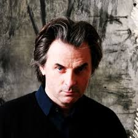

Autore: Jean-Christophe Grangé
Editore: Garzanti
Genere: Thriller
Anno Pubblicazione: 2016
Ogni settimana Thrillernord, presenterà un episodio del romanzo "Il rituale del male".
Ogni episodio, sarà commentato da Valeria Martellotti
Seguiteci!
Sinossi
L’aria è malvagia sull’isola di Sirling, al largo della costa bretone, dove il comandante Erwan Morvan deve indagare sull’orribile delitto di un cadetto militare. Suo padre è un uomo potente, che ha fatto fortuna in Africa e ora manovra tra le quinte le leve della polizia francese: è quel Grégoire Morvan famoso per aver fermato il killer chiamato l’Uomo Chiodo. E adesso, mentre le vittime si moltiplicano e gli indizi si fanno via via più evanescenti, dopo trent’anni il fantasma dell’Uomo Chiodo torna a braccare i Morvan, minacciando il buon nome di una famiglia in apparenza inattaccabile. L’indagine costringe Erwan sulle tracce delle più oscure gesta di suo padre, in una corsa sfrenata per salvare chi ama, lontano dalla Francia, fin nel cuore del Congo oscuro e sanguinoso che ha tenuto a battesimo la sua stessa esistenza.
EPISODIO 1
Avenue de Messine, Parigi.
La famiglia Morvan è riunita attorno al tavolo per il pranzo domenicale.
Quella che a prima vista potrebbe sembrare una rispettabile famiglia borghese nasconde dietro le apparenze una realtà molto meno edificante.
Gregoire Morvan oggi è primo poliziotto di Francia ma nasconde un passato burrascoso alle spalle.
Un metro e novanta per centoventi chili, lineamenti da bufalo e naso greco, ha sempre avuto tendenze violente.
Le intemperanze giovanili gli hanno assicurato un biglietto di sola andata per l’Africa.
In Congo ha sviluppato affari e traffici ai limiti della legalità. In seguito alla soluzione dello spinoso caso dell’uomo chiodo è rientrato in patria come un eroe.
Oggi, a sessant’anni, è il maestro indiscusso del lobbying, dei giochi di potere e dell’arte della diffamazione.
Seduto rigidamente a capotavola osserva i suoi figli riuniti per il pranzo: Loic, 36 anni, ex alcolista, cocainomane e broker milionario, cerca la redenzione nel buddhismo; Gaelle, 29 anni, per lavorare nel cinema va a letto con chiunque possa far decollare la sua carriera; e poi c’è Erwan, il maggiore, comandante della omicidi, l’unico ad aver seguito le orme paterne.
Gregoire chiama Erwan nel suo studio. Ha una missione speciale da affidargli.
A Kaerverec, in Bretagna, si trova un’accademia aeronautica.
Nella notte tra venerdì e sabato, in seguito ad una storia di nonnismo, c’è scappato il morto. Una cerimonia di iniziazione finita in tragedia.
La notizia non deve essere divulgata fino a che gli Interni e la Difesa non avranno una versione presentabile.
Erwan non si fida delle storie del padre e questa è più finta del solito. In preda all’inquietudine contatta il suo collega Kripo e parte per Brest.
EPISODIO 2
Bretagna.
Il mare è una vorticosa massa nera sfrangiata di grigio la cui linea frastagliata si fonde con il cielo plumbeo. Le falesie verdi e bianche si ergono a picco sul litorale. Siamo alla fine del mondo: il Finistère. Finis Terrae.
Erwan Morvan della omicidi di Parigi e il suo vice Kripo si trovano all’accademia aeronautica Kaerverec 76 per indagare sulla morte di un aspirante cadetto.
Durante il week end di integrazione delle matricole il soldato si è rifugiato sull’isola di Sirling, ultima zona di tiro della Bretagna. Qui è stato accidentalmente colpito e ucciso da un missile lanciato dalla portaerei Charles De Gaulle durante una missione di addestramento.
Erwan e Kripo danno avvio alle indagini interrogando cadetti e ufficiali della base militare. La reticenza a parlare è palpabile. I soldati sembrano ripetere la stessa versione dei fatti.
Tutti alla base parlano di “increscioso incidente” ma il comandante della omicidi è abituato ad investigare e capisce che dietro al muro di omertà deve esserci altro.
Contravvenendo agli ordini militari Morvan fa intervenire la scientifica, vuole effettuare prelievi sul cadavere e analizzare la scena del crimine sull’isola di Sirling.
“Si riparte da zero”
EPISODIO 3
Gregoire Morvan ha sempre servito lo Stato lavorando dietro le quinte.
Responsabile delle intercettazioni dell’Eliseo ha salvato capi di stato da situazioni imbarazzanti deviando indagini ufficiali, smarrendo documenti compromettenti e soffocando scandali.
Nonostante ciò è sempre rimasto incorruttibile evitando di votare e di accettare nomine pubbliche ma ha sviluppato un odio viscerale verso i colletti bianchi che ha dovuto proteggere.
Ora ha spedito suo figlio, il miglior poliziotto della omicidi di Parigi, a risolvere quello che crede essere un episodio di nonnismo finito in tragedia.
Erwan Morvan in elicottero verso la portaerei Charles De Gaulle riassume mentalmente gli avvenimenti degli ultimi giorni:
1. Il feroce omicidio di un EOPAN in una base militare;
2. La cerimonia di iniziazione stupida e crudele;
3. La totale assenza di comunicazione tra un’accademia dell’aeronautica navale e una portaerei distante appena qualche chilometro;
4. L’indifferenza generale di fronte alla morte di un ragazzo che aveva deciso di consacrare la propria vita all’esercito.
Mentre il colloquio con il medico della base militare sembra legittimare le violenze tra soldati come parte della formazione militare,
l’incontro sulla Charles De Gaulle con l’Ammiraglio Di Greco, Capo di Stato Maggiore, uomo malato e ambiguo, non riesce a far luce sull’accaduto.
I rilevamenti effettuati sull’Isola di Sirling portano alla luce particolari inquietanti: la vittima è stata torturata e stuprata. Inoltre sul luogo del delitto viene rinvenuto un anello con lo stemma della famiglia Morvan che il vecchio Gregoire afferma di aver smarrito mesi prima.
A Parigi Loic è alle prese con un inaspettato e preoccupante rialzo delle azioni dell’azienda mineraria di famiglia.
Mentre dal suo ufficio cerca di interpretare gli andamenti altalenanti del mercato azionario, riceve un pacco sinistro.
EPISODIO 4
Sono trascorsi alcuni giorni dall’omicidio di un aspirante cadetto dell’accademia aeronautica di Kaerverec.
Le ricerche proseguono faticosamente, rallentate dalla morsa del freddo e da una pioggia incessante, guidate da Erwan Morvan comandante della omicidi di Parigi.
Il sostituto procuratore scalpita per avere notizie e fa pressione perché venga indetta una conferenza stampa ufficiale.
Anche i genitori della vittima fanno pressione per conoscere la verità.
Le indagini vanno avanti portando alla luce particolari sempre più macabri.
La pista dell’iniziazione è stata vagliata e poi, scartata, nemmeno l’ipotesi del linciaggio sembra reggere.
Nuovi particolari inquietanti fanno temere Morvan di avere a che fare con un maniaco assassino.
In un momento di pausa dalle indagini riceve una telefonata dal vecchio Gregoire, ha un brutto presentimento, vuole che Erwan torni a casa al più presto.
Loic è stato arrestato per possesso di stupefacenti. Gaelle è scomparsa, dopo aver seminato i due scagnozzi che suo padre le ha messo alle calcagna.
Un suicidio a bordo della più importante nave da guerra francese non è cosa da poco. Se poi riguarda uno dei maggiori indiziati del crimine può essere interpretato come un’ammissione di colpa e chiudere il caso? Erwan non ama questo genere di conclusioni, gli ricordano una barzelletta che circolava fra gli studenti di medicina ai tempi dell’università:” L’operazione è riuscita ma il paziente è morto”.
Inoltre in questa ipotesi ci sono due punti deboli: l’assenza di un movente e la fragilità fisica.
Le indagini continuano.
EPISODIO 5
Erwan Morvan si trova ormai da giorni in Bretagna per indagare sulla morte sospetta di un giovane cadetto dell’accademia aeronautica di Kaerverec.
In seguito all’analisi e alla decrittazione del computer della vittima è emerso che la stessa intratteneva una fitta corrispondenza con l’Ammiraglio Di Greco, morto suicida e, allo stato attuale, principale indiziato dell’omicidio.
Mentre Morvan accarezza l’idea di chiedere l’intervento dell’esercito per avere accesso al fascicolo completo di Di Greco e sbrogliare finalmente questa matassa una nuova macabra scoperta del medico legale ruota il fulcro dell’indagine che torna al punto di partenza.
Quando incontra il comandante della omicidi Il medico della base militare sembra aver superato da un pezzo la soglia della sopportazione.
“Ho capito che nonostante le sue condizioni, questo corpo è come il vaso di Pandora: più cerchiamo e più cose troviamo”.
Intanto a Parigi Gregoire Morvan è riuscito a far uscire di prigione Loic ma ha trascorso una notte infruttuosa alla ricerca di Gaelle, che sembra scomparsa nel nulla.
Mentre Morvan abbandona in auto la base militare bretone per tornare a casa oppresso da mille dubbi la situazione precipita.
Il corpo di una giovane donna viene ritrovato in un vecchio condotto di aereazione; l’analista criminale comunica che è riuscito a scoprire la vera natura delle punte metalliche estratte dal corpo della vittima; al telefono con sua madre Erwan scopre di essere nato a Lontano, una colonia mineraria creata in Africa da bianchi con i guadagni delle miniere.
Ad Erwan inizia a mancare la terra sotto i piedi, è sempre più insistente la sensazione che qualcuno stia cercando di implicare suo padre in questo caso.
Gli indizi raccolti fino ad ora rispecchiano il modus operandi dell’uomo chiodo, il killer che suo padre ha incastrato nel 1971 in Africa e l’ultimo messaggio lasciato da Di Greco “Lontano” suona come un avvertimento.
Dopo un attimo di smarrimento Erwan risale in auto, spegne cellulare e computer, deve riflettere. Ma prima deve assolutamente parlare con suo padre.
EPISODIO 6
Parigi.
Gregoire Morvan e Jean Pierre Fitoussi, commissario capo dell’anticrimine, sono al Quai Des Grands Augustins. La confusione intorno a loro è al culmine mentre assistono attoniti al recupero del corpo di una giovane, rinvenuto poche ore prima in un condotto di areazione sulla Senna.
Alla vista del corpo il terrore prende il sopravvento. Tra i presenti Morvan è l’unico a non essere nuovo ad una macabro spettacolo come questo, conosce le regole del mostro, il suo modo di ragionare, di procedere.
Il vecchio Morvan continua a ripetersi che stavolta non può essere lo stesso serial killer, solo qualche anno addietro aveva avuto notizia certa della sua morte. Di una cosa però è sicuro: devono aspettarsi un terzo cadavere. Non è ancora finita.
Quando Erwan arriva sul posto Gregoire gli espone la sua teoria di un complotto contro la famiglia: l’omicidio alla base militare, il messaggio di addio di Di Greco, la scomparsa di Gaelle, il rialzo improvviso delle azioni di famiglia, il macabro pacco ricevuto da Loic.
Ad Erwan sembra solo un gran delirio, non riesce a cogliere il nesso tra tutte quelle grane.
“chi può avercela così tanto con te?”
“I candidati sono tanti.”
Il commissario Fitoussi gli affida ufficialmente il caso e, alle cinque di pomeriggio, Morvan è già al commissariato, seduto intorno ad un tavolo, in riunione con la sua squadra.
Tonfa, il sardina, Kripo e Audrey, non sono proprio il dream team ma Morvan si fida di loro e del loro fiuto.
Dopo averli messi al corrente delle vicende di Kaerverec parte alla ricerca di Gaelle.
Decine di volte ha attraversato Parigi a sirene spiegate per poi trovare sua sorella ubriaca in qualche bar di lusso. Ma stavolta è diverso.
Col passare delle ore l’inquietudine per la sua scomparsa ha lasciato il posto all’angoscia e poi al panico.
Panico che diventa terrore quando da uno dei contatti rintracciati sente nominare il rituale del NO LIMIT.
EPISODIO 7
Parigi.
Loic sta battendo da ore il quartiere finanziario in cerca di qualche collega disposto a parlare.
Sa che broker e trader sono tenuti a rispettare il segreto professionale ma sa anche che sono disposti a violarlo ogni giorno, in cambio di un ritorno personale.
Ha il sospetto che qualcuno vicino alla famiglia abbia spifferato notizie top secret sui nuovi giacimenti del Katanga settentrionale accendendo i riflettori su quella potenziale montagna di soldi. Anche suo padre sospetta un insider trading.
La notizia dei nuovi giacimenti è trapelata e, uno o più attori, vogliono unirsi alle danze.
Erwan Morvan è a casa di Gaelle. E’ riuscito ancora una volta a ripescarla in tempo dalla fogna in cui era finita.
Mentre sta pensando di farle uno shampoo, l’ennesimo, se la trova davanti, pulita e indifesa. Come un flash gli tornano in mente gli episodi di violenza familiare ai quali hanno dovuto assistere da bambini. Non le dice nulla. Le da un bacio sulla guancia e se ne va.
Le indagini sugli omicidi sono a un punto morto. Morvan sente che è venuto il momento di indagare sugli antefatti del caso. L’Istituto Charcot, in Bretagna, dove è morto l’uomo chiodo, dista solo pochi chilometri dalla base di Kaerverenc.
Nel 2009 le ceneri del mostro sono state gettate nell’area di dispersione del cimitero della base militare. Troppe casualità.
Gregoire ed Erwan partono insieme da Parigi, direzione aereoporto.
Il primo è diretto a Kinshasa. Deve convincere il generale Kabongo della sua estraneità al rialzo delle azioni.
Il secondo è diretto in Bretagna, dove gli omicidi hanno avuto inizio.
Ad accoglierlo, oltre ai militari della base, Erwan ritrova cielo terso e sole splendente, alture dai profili alti e tormentati, scolpiti dal vento. Rocce nere che si ergono sopra le distese di erba grigia, e il mare che si gonfia in lontananza.
EPISODIO 8
Erwan Morvan, comandante della sezione omicidi di Parigi, è di nuovo in Bretagna, sulle tracce di un serial killer che sta terrorizzando la Francia.
Insieme alla squadra di esperti di Kaerverenc sta visitando l’ospedale psichiatrico Jean-Martin Charcot che, dal 2000 al 2009 ha ospitato l’uomo chiodo, il famoso assassino seriale catturato in Africa da suo padre Gregoire.
E’ ormai una macabra certezza che il modus operandi dell’attuale assassino ricalchi fedelmente quello del famoso predecessore. Morvan teme che, durante il suo soggiorno allo Charcot, il mostro abbia istruito un adepto.
Anche Gregoire Morvan è in trasferta. E’ partito in fretta e furia per Kinshasa. Ad accoglierlo un violento temporale africano, di quelli che tingono tutto di rosso e sembrano incendiare anche il cielo. Strade allagate.
Auto impantanate. Traffico in tilt.
Gregoire sa che in Africa nessuno è al di sopra della legge perché la legge è quella della natura.
Rientrato a Parigi Erwan apprende che c’è una svolta decisiva nelle indagini.
I reperti organici trovati nell’addome dell’ultima vittima appartengono ad un uomo la cui identità è nota all’archivio della polizia. Morvan e la sua squadra si muovono tempestivamente. Sperano di trovare l’uomo ancora vivo.
In auto apprendono che fa parte dei servizi segreti. Ancora una volta un filo invisibile sembra collegare una possibile vittima al vecchio Morvan.
Due morti in due giorni. Tre in una settimana, contando anche il militare di Kaerverenc.
La Francia non ha mai conosciuto una serie di delitti così ravvicinata.
L’ipotesi della vendetta contro i Morvan sta diventando realtà.
A quanto pare per l’assassino il demone da combattere sta diventando proprio lui: Gregoire Morvan.
EPISODIO 9
Parigi è attraversata da un’ondata di panico.
L’uomo chiodo ha colpito ancora. La stampa e l’opinione pubblica lamentano la mancanza di ipotesi investigative plausibili che spieghino la serie di omicidi che si susseguono senza sosta.
Erwan Morvan, della sezione omicidi di Parigi sta ricevendo pressioni dai piani alti.
Solo quella mattina il comandante Fitoussi l’ha chiamato cinque volte per informarlo che nessuno capisce i suoi metodi, lo accusa di sparire in continuazione e che in cinque giorni non ha ancora arrestato un sospettato né interrogato alcun testimone.
In verità Morvan e la sua squadra iper specializzata di investigatori e tecnici lavorano senza sosta battendo tutte le piste possibili.
Morvan è appena tornato da Marsiglia. Sta seguendo una pista promettente. Ha scoperto che navi cargo della società HEEMECHT trasportano materiali metallici di recupero, anche vecchi chiodi arrugginiti, dal Congo al Porto di Marsiglia.
Supponendo che il killer debba rinnovare il suo stock di chiodi, Erwan ha intenzione di appostarsi in prossimità dei container e coglierlo di sorpresa.
Nonostante il cerchio cominci a stringersi intorno all’identità del killer l’attenzione di Erwan è sempre più assorbita dalle vicende di famiglia e dal loro intersecarsi con le indagini.
Si trova sempre più spesso a fare da arbitro tra i familiari, sciroccati e sempre sul punto di esplodere. Il clan Morvan ha sempre la meglio su tutto il resto.
EPISODIO 10
Negli ultimi dieci giorni il comandante della omicidi di Parigi, Erwan Morvan, ha avuto l’impressione che la sua vita stesse viaggiando su un vagone delle montagne russe.
Ci sono stati i giorni su e ci sono stati i giorni giù.
Morvan non ha ancora deciso se gridare o godersi la corsa.
Le indagini per scoprire l’identità del serial killer, emulatore dell’uomo chiodo, ristagnano.
Gli ultimi due sospettati sono stati interrogati dalla squadra omicidi e poi rilasciati, perché riconosciuti estranei ai fatti.
Questo buco nell’acqua, l’ennesimo, ha permesso a Morvan di approfondire molti aspetti riguardanti il rituale del NON LIMIT.
Inoltre ha ormai la certezza che tutte le vittime di questo caso, dirette e indirette, sono in qualche modo collegate a questo rituale magico.
Pur consapevole che ad ogni passo avanti delle indagini il coinvolgimento di suo padre diventa sempre più evidente, Morvan non sembra scoraggiarsi.
Il suo istinto di poliziotto gli suggerisce che la verità è molto vicina.
Sul marciapiede, fuori del comando di Polizia, si scontra con Kripo. Ha la voce rotta dall’agitazione:
“La scientifica è riuscita ad accedere allo schedario delle esclusioni”
“ Era ora.
Chi è il parente della prossima vittima?”
“Tu!”
Morvan è atterrito. Il pensiero corre a Gaelle, ricoverata nell’istituto psichiatrico Saint-Anne, Padiglione Broca. Non c’è tempo da perdere.
“Kripo, manda la cavalleria!”
EPISODIO 11
Gregoire Morvan cammina nervosamente nell’ufficio a mezza luna di Loic.
Per sistemare il casino della Coltano sta pensando di far crollare il prezzo delle azioni, inscenando una fluttuazione del mercato, prima del grande rialzo.
Nelle ultime ventiquattro ore il clan Morvan ha assistito ad un tentato suicidio e ad uno scampato omicidio.
Senza contare che c’è sempre un assassino a piede libero che li sta attaccando a viso aperto.
Come succede spesso durante le indagini, dopo due giorni di completa immobilità, c’è stata una incredibile accelerazione negli eventi.
Il medico legale che segue il caso ha scoperto che il DNA del campione di sangue estraneo trovato sul corpo delle vittime appartiene a Thierry Pharabot, meglio conosciuto come l’uomo chiodo.
Morvan è allibito. O Pharabot è ancora vivo o qualcuno ha prelevato il suo sangue per conservarlo.
Questa ipotesi raccapricciante ben si abbina al profilo di alcuni sospettati, seguaci dei rituali magici propri delle religioni africane.
Inoltre da qualche ora gli ronza in testa un’idea che non riesce ad accantonare.
Un club di assassini.
Uomini che hanno ucciso a turno seguendo il modus operandi e l’ispirazione del maestro: l’uomo chiodo.
Questa ipotesi spiegherebbe anche molte incongruenze emerse negli alibi dei sospettati.
Erwan e Kripo tornano in Bretagna.
Un’ultima visita all’istituto Charcot per far luce sugli ultimi giorni che Pharabot ha trascorso su questa terra, quindi un colloquio con il medico legale della base di Kaerverenc.
Quest’ultimo sembra fornire a Morvan il movente e la logica degli omicidi ….. la verità è vicina.
“Inoltri tutto a Parigi. Avverta la procura di Rennes.Domani la Bretagna tornerà ad essere un’oasi di pace”
EPISODIO 12
Il clan Morvan è di nuovo riunito in una stanza di ospedale. Gregoire, con un braccio steccato, parla al telefono, Loic legge sms sprofondato in poltrona, Maggie parla con Erwan disteso a letto e Gaelle li osserva tutti.
Il caso è stato risolto.
Ancora una volta Gregoire è intervenuto al momento giusto, ha preso in mano la situazione, risolvendola.
A causa dei suoi metodi, tutt’altro che cristallini, ha ricevuto delle critiche che, come al solito, lo lasciano indifferente.
“Quando si ha il vuoto dentro, non si avverte più il suo richiamo”
Erwan però non trova pace.
Tante domande lo assillano, alle quali teme di non riuscire a dare una risposta.
Non sopporta l’idea che non ci sarà un processo, dal momento che i sospettati sono tutti morti.
Si fida sempre meno di suo padre.
Sdraiato nel letto d’ospedale sta rileggendo gli atti del processo di Lubumbashi dove l’uomo chiodo è stato riconosciuto colpevole dell’omicidio di nove donne.
Alcuni elementi gli sembrano poco chiari, per non dire strani.
Sta pensando di ripartire per il Belgio per interrogare alcuni testimoni del primo caso. Se non dovesse trovare nulla è disposto ad andare fino in Africa.
E’ stanco delle menzogne e delle macchinazioni paterne.
E’ determinato ad andare fino in fondo, a scoprire la verità, anche se questo volesse dire distruggere la sua famiglia.
FINE
 L'AUTORE - Jean-Christophe Grangé è autore di romanzi di grandissimo successo che hanno ampliato i confini del thriller tradizionale: Il volo delle cicogne, I fiumi di porpora, Il concilio di pietra, L'impero dei lupi, La linea nera, Il giuramento, Miserere, L'istinto del sangue. I suoi libri, tradotti in tutto il mondo e venduti in milioni di copie, sono pubblicati in Italia da Garzanti. Spesso sono stati portati sul grande schermo, e I fiumi di porpora ha vinto il premio Grinzane Cinema 2007 per il miglior libro da cui è stato tratto un film.